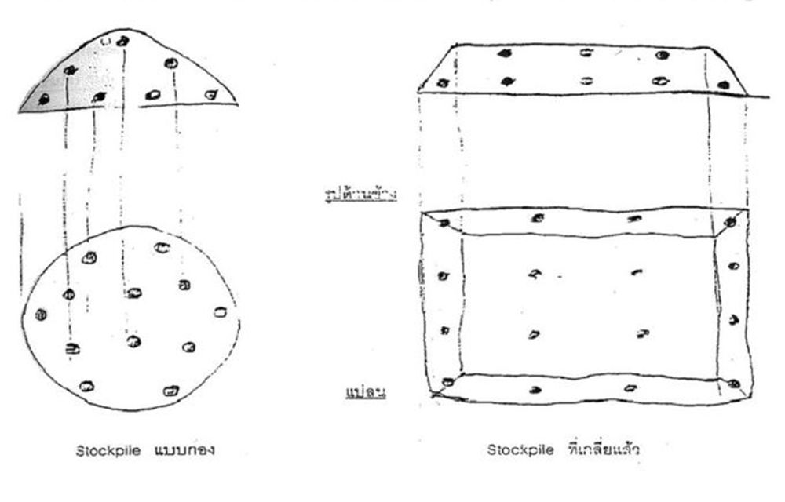
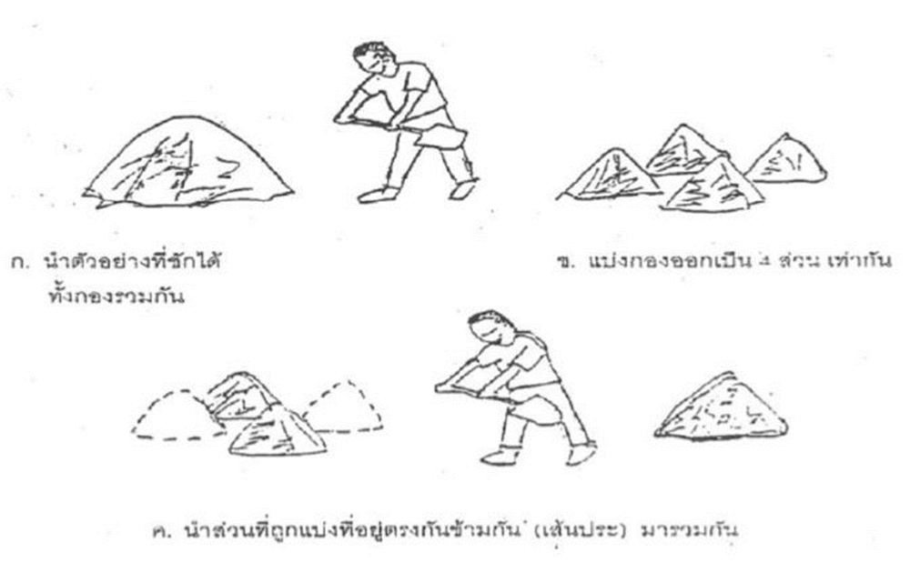

1ประเภทการทดสอบและบทบาทหน้าที่
General Test "เป็นการเก็บวัสดุจากแหล่งวัสดุ เช่น บ่อยืม (งานดิน) บ่อลูกรัง ถ้าเป็นวัสดุหินคลุกจะเก็บจากโรงโม่ที่จะนำไปใช้ จำนวนตัวอย่างที่เก็บส่งเพียง 1 หรือ 2 ตัวอย่างแล้วแต่กรณี"
คู่มือการควบคุมงานก่อสร้างทาง หัวข้อ 2.7.1 หน้า 2-23
Control Test เป็นการเก็บวัสดุที่ผู้รับจ้างนำมาลงสายทางในแต่ละตำแหน่งไปทดสอบซ้ำ หลังจากวัสดุผ่าน General Test แล้ว เพื่อยืนยันว่าวัสดุที่ใช้งานจริงมีคุณภาพเหมือนที่ทดสอบไว้ครั้งแรก
คู่มือการควบคุมงานก่อสร้างทาง ข้อ 2.7.2 หน้า 2-28
| การทดสอบ | ผู้รับผิดชอบ | เมื่อใด |
|---|---|---|
| General Test | สทช.14 (สตว.) | ครั้งแรกของแหล่งวัสดุทุกแห่ง ก่อนอนุญาตใช้วัสดุ ตาราง 2-10, 2-11 หมายเหตุ |
| Control Test | ขทช. | ระหว่างก่อสร้าง ตามระยะทาง/ปริมาณที่กำหนด จากวัสดุที่ลงสายทางจริง ข้อ 2.7.2 · ตาราง 2-11 |
| Spot Check | สทช.14 (สตว.) | สอบทานผลงาน: ตอกวัดความหนา + Nuclear Density ทุก 250 ม. อย่างน้อย 3 จุด/สายทาง มาตรการ QCS ปีงบ 2569 ข้อ 3, 10.1 |
ถ้าผล Field Density (Sand Cone) ต่ำกว่าข้อกำหนด ให้คราดออก (Scarify) แล้วบดอัดใหม่ (หัวข้อ 2.7 (2))
2หลักการเก็บตัวอย่าง
- เป็นตัวแทน — ตัวอย่างต้องเป็นตัวแทนของวัสดุทั้งหมดในกองหรือในงวดนั้น ทั้งสี เนื้อวัสดุ ส่วนผสม และคุณภาพ ถ้ามาตรฐานกำหนดวิธีเก็บไว้ให้ปฏิบัติตามนั้น (คู่มือการควบคุมงานก่อสร้างทาง หัวข้อ 2.7 (1) ก.)
- ปริมาณพอทดสอบ — ตามน้ำหนัก ความยาว หรือจำนวนที่กำหนด (ดูตารางรายวัสดุด้านล่าง) (คู่มือการควบคุมงานก่อสร้างทาง หัวข้อ 2.7 (1) ก.)
- ติดป้ายชัดเจน — ระบุ วัน เดือน ปี สถานที่เก็บ จุดที่เก็บ ผู้เก็บ ป้องกันตัวอย่างสลับกัน (คู่มือการควบคุมงานก่อสร้างทาง หัวข้อ 2.7 (1) ก.)
- ภาชนะเหมาะสม แข็งแรง (คู่มือการควบคุมงานก่อสร้างทาง หัวข้อ 2.7 (1) ก.)
- เก็บรักษาให้คงสภาพ จนถึงวันทดสอบ (คู่มือการควบคุมงานก่อสร้างทาง หัวข้อ 2.7 (1) ก.)
- เก็บต่อหน้าผู้ควบคุมงาน แล้วแนบบันทึกนำส่งตัวอย่าง (PDF 1) (แบบฟอร์มใบนำส่ง สตว.)
กองวัสดุและบ่อวัสดุ
- วัสดุกอง เช่น กรวด หิน ทราย ลูกรัง หินคลุก ทรายถม ดินถม ให้เก็บกระจายหลายจุดทั่วกอง แล้วลดขนาดด้วยการแบ่งสี่ (Quartering)
- วัสดุก้อนใหญ่ใช้การสุ่มเก็บ
- บ่อวัสดุ (บ่อลูกรัง บ่อดิน) ให้เก็บตัวอย่างใหม่ทุกครั้งที่ขนาดคละหรือสีของวัสดุเปลี่ยน
คู่มือการควบคุมงานก่อสร้างทาง หัวข้อ 2.7 (1)

3การแบ่งสี่ (Quartering)
เก็บได้เฉพาะผิวกองเท่านั้น ถ้าทำได้ให้เกลี่ยกองวัสดุให้เป็นรูปสี่เหลี่ยมก่อนเก็บ จำนวนจุดเก็บขึ้นกับดุลยพินิจของผู้ควบคุมงาน และกองวัสดุที่จะใช้วิธีแบ่งสี่ควรมีมากกว่า 5,000 ลบ.ม. ขึ้นไป (คู่มือการควบคุมงานก่อสร้างทาง หัวข้อ 2.7 (1) ข.)

- เก็บตัวอย่างจากหลายจุดกระจายทั่วกอง
- นำตัวอย่างทั้งหมดมารวมเป็นกองเดียว
- แบ่งกองออกเป็น 4 ส่วนเท่ากัน
- นำส่วนที่อยู่ตรงข้ามกันมารวมเป็น 2 กอง แล้วเลือกไว้ 1 กอง
- แบ่งกองที่เลือกออกเป็น 4 ส่วนอีกครั้ง
- นำส่วนตรงข้ามมารวมกันอีกครั้ง แล้วเลือกไว้ 1 กอง
- ทำซ้ำขั้นที่ 3–6 จนเหลือปริมาณตามที่ต้องการ
คู่มือการควบคุมงานก่อสร้างทาง หัวข้อ 2.7 (1) ข. หน้า 2-20 ถึง 2-21
4ปริมาณตัวอย่างและความถี่
ย้ายไปไว้ที่หน้าแรก เพื่อเปิดดูได้เร็ว
ดูปริมาณตัวอย่างและความถี่ →5ป้ายกำกับภาชนะ
ป้ายติดภาชนะ
- วัน เดือน ปี ที่เก็บ
- สถานที่ / กม.
- จุดเก็บ
- ผู้เก็บ
แนวปฏิบัติ สตว.